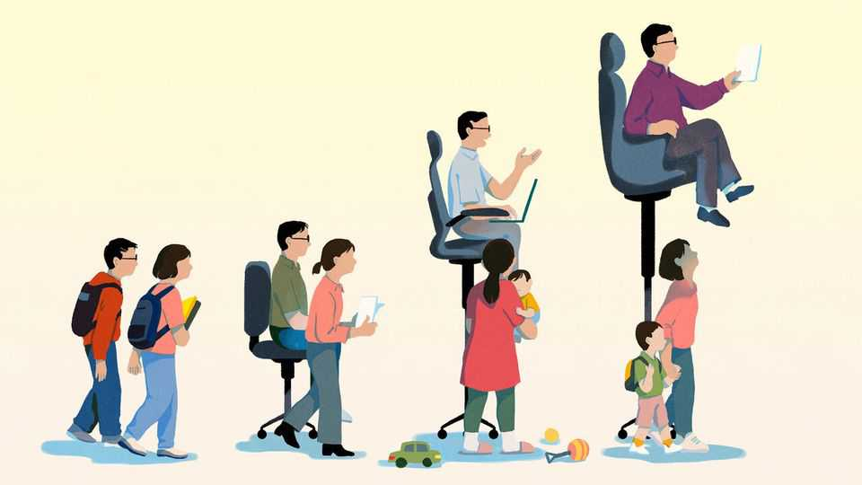

Chinese women are falling behind in the office
The pressure to have children collides with a fierce work culture

Aug 27th 2026
For those unaccustomed to truth in advertising, employers in China can be astonishingly forthright in their help-wanted notices. Huangshi, a city in Hubei, recently sought investment-promotion officers under 35 years old, specifying “men preferred”. A high-speed rail operator in Lanzhou wanted women, but only so long as they were under 25, over 160cm tall and with a “good appearance”. A Suzhou packaging firm, by contrast, stretched to the geriatric reaches of 45 in its search for a sales representative, adding that female candidates should already be married with children—in other words, please no maternity leave.
These are just a few blatant examples of discrimination that women face in the Chinese labour market. More extensive discrimination is largely out of sight. It includes pressure on women to avoid pregnancy, higher pay for male colleagues and fewer opportunities as women’s careers progress.
In the 1950s, when Mao Zedong declared that “women held up half the sky”, in narrowly economic terms China looked egalitarian. Men and women had similar jobs as well as incomes, though both were miserable—and that was if you were lucky enough to escape becoming victims of Mao’s revolution-without-end. Today women in China more than match men in educational terms: 51% of university students are female, up by 14 percentage points since 1995. The picture at work, by contrast, has grown worse. Men on average now earn roughly a third more. In 1990 nearly 80% of women aged between 15 and 64 were in the labour force, one of the highest rates anywhere in the world. Today that has slipped to under 70%, below both Japan and the European Union. China’s business leadership is overwhelmingly male. Women are even rarer at the top of politics. For a quarter-century until 2022, the Politburo, the Communist Party’s top body, boasted a woman or two. Since then there have been none.
Sexism is part of the problem. For businessmen and officials, the banqueting table is often where deals get done. But long boozy dinners (officially forbidden under Xi Jinping) can be offputting to women, or worse. A senior cadre and a property executive in Hangzhou, a wealthy east-central city, were recently accused of assaulting a young female employee after such a dinner. The incident provoked public outrage, including renewed calls to clean up the practice of banquets. A more common experience for women is less aggressive, though still demeaning. “Our bosses wouldn’t say it directly but they hope we act as decoration,” says Ms Dou, who worked in tech. Yet nothing is straightforward. Erica, a woman in her 20s in the events industry, says she has had more friction with female bosses than male ones. “We’re a patriarchal society, so when women break through and get power, they tend to be more controlling,” she says.
The more pervasive problem is less that of outright sexism and more how women’s role, or potential role, as mothers clashes with work. A “motherhood penalty” is common nearly everywhere. But in China the penalty is especially high, owing to a fierce work culture, an outdated retirement system and an intensifying state-led fertility push colliding with entrenched career patterns.
Compared with other countries at its level of development, China has generous maternity leave: mothers can get about half a year off work, on full pay. But the state covers only part of the salary on leave, with employers paying for the bulk. Five women in their 30s and 40s told Chaguan that their bosses expected to be informed should they be trying to get pregnant. “Speaking as a former manager, I myself wasn’t all that willing to hire women under 35,” said Ms Chen, who used to work in media. “What if she comes in and gets pregnant right away?” The government’s recent push for two-child families, aimed at reversing a fast-declining fertility rate, adds to employers’ concerns that married women are liable to take extended breaks from work.
After pregnancy, women face other hurdles. A common expectation that they will guide their children through school is hardly compatible with the long hours expected in many Chinese jobs. “Men the same age as me are in a better position,” says Ms Dou, in her early 40s. “There’s an assumption that they don’t have as much responsibility at home.” Job ads often state that candidates should be able to tolerate high stress, regularly work overtime and always be reachable. Such requirements do not discriminate specifically against women, but are deterrents to any parent with their hands full with young children—usually the mother.
Nor is there much runway left for a woman returning to work, perhaps in her early 40s. In white-collar jobs the official retirement age is just a few months over 55 for women and 60 for men (by 2040 these will be raised gradually to 58 and 63, respectively). Companies have less incentive to invest in mid-career women who have taken time off for children. “The job market is already biased enough against women,” says Ms Wu, a former web designer who left to have a child. “After 35 it is like frost on top of snow.” She is taking matters into her own hands, retraining as a drone pilot.
Policy tweaks would help, including making maternity and paternity leave more equal (many places give fathers 15 days, if they take any). More state funding for paid leave would ease the financial strain on companies. Men and women should also have the same (higher) retirement ages.
Yet what women are up against is less skewed policy than powerful social norms, especially the weight placed upon mothers. Until that changes, China is undermining its own potential. In educational terms, Chinese women already hold up more than half the sky today. In the world of work, they are getting just about a third of it. ■